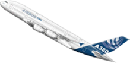

AIRBUS - A380
Het grootste passagiersvliegtuig ter wereld
Eerste vlucht
Het toestel maakte zijn eerste trans-Atlantische vlucht met passagiers op 19 maart 2007 tussen Frankfurt am Main en New York.
Singapore
De eerste vijf A380 toestellen werden aan Singapore Airlines geleverd. Nadat in Toulouse het eerste afgeleverde toestel op 15 oktober 2007 officieel aan Singapore Airlines overgedragen was, werd op 25 oktober de eerste commerciële vlucht uitgevoerd.
Qantas
Bij een A380 van Qantas (QF32) deed zich kort na het opstijgen van de Luchthaven van Singapore een "uncontained engine failure" voor waarbij er delen van de motor afvielen. Brokstukken van de motorbehuizing vielen op het Indonesische eiland Batam. Er vielen geen gewonden.
Air France
Een Airbus A380 van Air France raakte tijdens het taxiën naar de startbaan op John F. Kennedy International Airport met zijn vleugel de staart van een Bombardier CRJ700 van Comair.
De Airbus A380 is het grootste passagiersvliegtuig ter wereld. Het is een product van het Europese concern Airbus. Het widebody-vliegtuig beschikt over twee verdiepingen, waardoor het maximaal 853 passagiers kan herbergen. Bij een gemiddelde configuratie passen er 555 personen in. De eerste testvlucht werd gemaakt op 27 april 2005. Tweeënhalf jaar later, op 25 oktober 2007, maakte de A380 haar eerste commerciële vlucht. In dienst van Singapore Airlines vloog de A380 van Singapore naar Sydney. Dit was eveneens de eerste route waarop een lijndienst door het toestel werd onderhouden. Anno april 2011 hebben vijf luchtvaartmaatschappijen 47 vliegtuigen van dit type in dienst.

|

|

|

|

|

|

|

|

|
- Manchester
- Toulouse
- Main Building
- Wing Assembly
- Simulator
- Frankfurt am Main
- Documentary
- Aircrafts
- A380 - 800
< © Examen Lab Multimedia & Webdesign Applicatie-ontwikkeling >